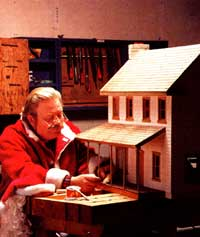
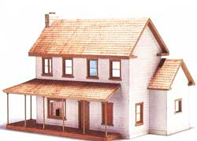
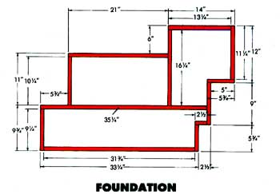
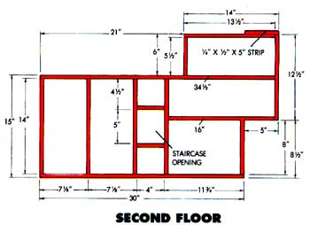
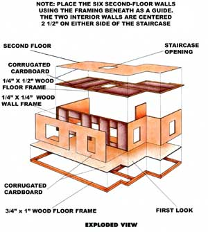
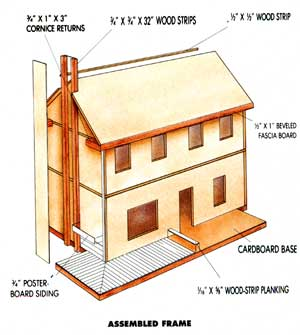
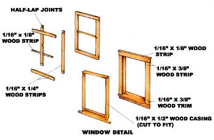
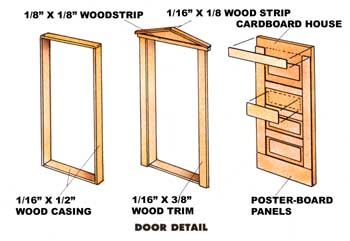
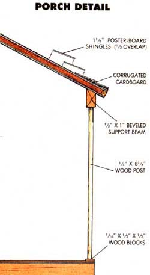
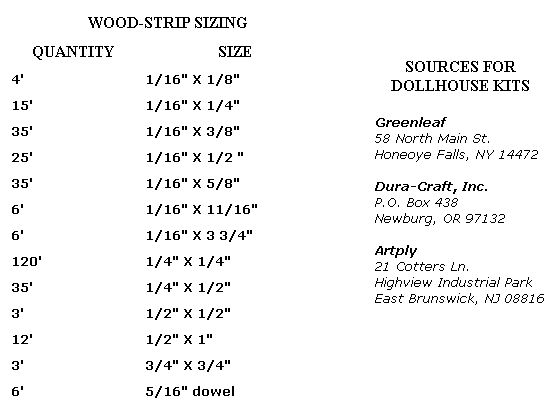

Unless You're lucky enough to have inherited a handmade dollhouse from an earlier time-perhaps one of those grand, exquisitely detailed masterpieces that a grandmother or great-aunt might have doted over for hours-you'll most likely find real quality only by building your own, buying a precut kit from one of the reputable dollhouse manufacturers, or taking out a mortgage at an exclusive toy store.
Whichever route you take, you'll probably end up with a dollhouse made of plywood-usually a thin lauan for the die-cut kit models, and thicker stock for the homemade versions. Both are plenty sturdy and have the bulk to prove it-the larger kits can weigh a very solid 50 pounds or more.
Construction aside, there's one clear measure of quality in any dollhouse, and that's accuracy in scale: the proportional translation of full-size features to miniature ones. The most popular scale is 1" to 1'; hence, a house measuring 30' X 42' becomes a model 2 1/2' X 3 1/2' in size. Likewise, wall thicknesses, door heights, and window openings all should be reduced proportionately so as not to look awkward in miniature.
In an attempt to achieve a comfortable middle ground between durability, weight, and faithful scale, Clarence Goosen, a former MOTHER staffer, developed this farm-style dollhouse, using a sheathing-over-framing technique common to full-size structures. The framework is made of white pine, cut into strips of no more than 1" in width. The sheathing is corrugated cardboard covered on the outside with poster-board siding. Inside, pieces of fabric, wallpaper, or wood set off the different rooms.
The result is an inexpensive (albeit a time-consuming) project with the accurate detail of the better kits. Those who simply follow the instructions will be well on their way to completing a duplicate of the house you see here; the more adventurous can use the techniques to modify this plan or even to design a whole new structure to suit their tastes. Because many of the raw materials are free, there's little reason not to experiment with the house's shape or its features.
Before you begin, take stock of your tools. With the exception of one item, you won't need anything complicated. An artist's trim knife (or a utility knife), a steel straightedge, a square, a hammer, sandpaper, and a pair of 8" scissors will do everything but cut the wood. For that, you'll need either a standard table saw or, better, a compact bench-top model with a small-diameter blade. If you have access to neither, have someone cut the strips for you-it's important that they be trimmed accurately.
Next, scout out a supply of rigid corrugated cardboard. Try to find stiff, undamaged panels from appliance or shipping cartons; you'll need 65 or 70 square feet to complete the house. You'll also have to gather about four 18 " X 24" sheets of white poster board. It's available in many colors, but it's best to use white unless you're very careful when gluing the pieces, because the adhesive may ooze and show through the seams.
Finally, gather the odds and ends. You'll probably use between one pint and a quart of white glue or wet-tack yellow aliphatic resin. White-stick hotmelt glue is also a good choice because it dries quickly. Get some 6-penny (2") box nails to fasten the foundation framing, an assortment of paper and upholstery-cloth samples to cover the walls and floors, and ribbed, .177-caliber air-gun pellets for doorknobs.
All the wooden members can be cut from 3/4" boards to the dimensions indicated in the accompanying wood-strip sizing chart. Finish lengths vary from 1" to just under 36", so 3' sections are a handy size. Clear, knot-free woods -white pine, basswood, redwood, poplar-are best to work with because they're easy to shape and handle.
Once the strips are sawn to width, "cut" them to length by scoring all four sides with a trim knife and snapping the wood at the marks. Ragged ends can be trimmed or sanded smooth. In a few places, such as the window casings, roof crowns, and fascia boards, the trim width will depend on the thickness of the cardboard that makes up the finished wall. Be prepared to adjust the size of those pieces to match the wall you build.
The foundation frame is the only part of the dollhouse that's nailed together. Cut all the 3/4" X 1" pieces to length, and glue and nail the strips together, 3/4"-side up, in the pattern shown. Use a carpenter's square to true the corners, then cut a piece of cardboard to the shape of the frame, and glue it to the face. Set something heavy on the board to hold it down while the glue hardens.
All the wall, floor, and roof panels are made in the same manner-by sandwiching a wooden frame between two corrugated sheets. Cut the wooden members first, then cut the cardboard to size, using a straightedge and a sharp blade. Mark the placement of the framing on the cardboard, and glue the pieces in place. This way, wall openings can be cut into both sheets before gluing; if you trim out the openings after the panel has cured, take care to start the cuts within the wooden borders.
As you progress from the first-floor walls to the second floor to the roof, avoid building ahead: First mark the placement of the side walls in order from left to right (facing the house), then use the actual distances to establish the lengths of the front walls. Glue the walls down when all six are complete.
Next, measure and build the second-floor frame to fit the existing walls. Then make the second-story outer walls, and measure for the front wall. Build that panel and the two interior walls, and glue all the pieces in place.
Use the second-floor walls to size the attic floor, and fasten the completed platform in place with adhesive. Measure and build the two gables, the front roof, and the two rear gable-end overhangs. Glue all the components together, making sure the roofs' bottom edges are even with the top edge of the attic floor. That done, make up the kitchen roof and gable, glue them in place, and fasten cut wood strips to the roof ridges to make finish crowns.
All five eave edges are finished with beveled fascia boards cut from 1/2" X I" stock and fitted with short 3/4" X 1 " cornice returns. The chimney is framed with two 3/4" "-square X 32 "wood strips and covered with cardboard. Later, poster-board stones can be cut and pasted over that.
The windows and the door require more patience than any other part of the house. The casings, or wooden frameworks that fit the rough openings in the walls, go in place first; on the windows, the lower strip is angled and the outer wall beveled to fit it. Next, the outer trim is installed, then simple fivepart sashes are glued to the window casings. The raised-panel door can be made by gluing strips of poster board to a cardboard core.
The siding is cut from 1/4" strips of poster board and is overlapped 1/16" at each joint. To mount it evenly, mark off the wall corners in 11/16" increments, starting at the bottom. Then cover the fascia, cornices, and soffits with poster board, and cut 3/8" wooden strips for the corner trim and 1/4" strips for the gable fascia. If you want to spray-paint the house, do it now.
Randomly shaped poster-board stones will finish off the chimney nicely if you're sure to bend some of the pieces around the corners for the sake of realism. Gray and brown acrylic paint and a semidry brush daubing will give the stones the needed rough look.
Complete the porch by first gluing 1/8" X 51/4" wood strips to the subfloor, then making the two roof panels. The surfaces at the roof-peak joint and those that meet the house must be beveled to 21° and 28°, respectively, to fit properly. Beveled 1/2" X 1" wood strips are glued at the fascia to hold the seven 5/16" X 8 1/4" dowel posts and their bolsters. (Similar 1/2"-square wood blocks are used for bases.) Glue the end and corner posts down, attach the roof, place the remaining posts, and add the poster-board fascia.
The shingles are just poster board cut to 1-1/8" lengths and random widths. Mark lines across the roof every 3/4" to position the top edge of each course as you glue the pieces down. Then fasten thin strips of wood trim to the exposed edges of the corrugated walls at the rear of the house. Finish up by brush-painting the exterior trim in a complementary color, decorating the interior with paper and fabric, and fitting the inside window and door trim.
Of course, there's no need to stop there. Add a stone foundation, a staircase, a fireplace mantel, molding, or anything else you can make using scraps and a good imagination. You may want to purchase furniture and accessories and even a little family.
Who knows? Perhaps at some point the dollhouse you're thinking of building today will become one of those detailed, treasured heirlooms of tomorrow.
|
 Michael Soluri Your main expenditure on this project will be time: Careful attention to details will yield beautiful results. |
 |
 |
|
 |
 |
 |
|
 |
 |
 |
|
 |
|
|